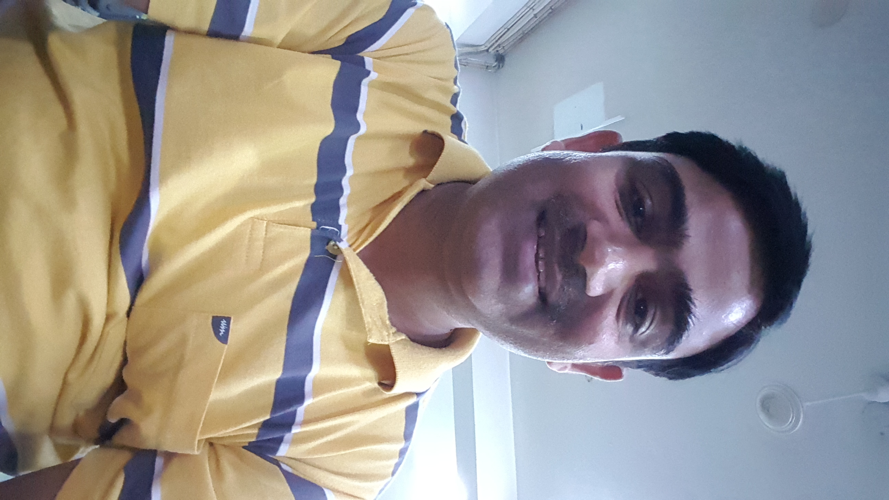

<html>
    <head>
        <title>Masoom Resume</title>
        <style>
            body{padding: 50px; background-image: url(image/drupal.jpg); background-size: 100%;}
            ul li{list-style: none;}
            ul.bull li{list-style: disc;}
            h1{font-size: 22px;}
            .center{text-align: center;}
            div{padding: 5px 0px;}
            .ml-5{margin-left: 5px;}
            .ml-10{margin-left: 10px;}
            table td{padding: 10px;}
            table td ul{margin: 5px; padding-left: 15px;}
            .bold{font-weight: 600;}
        </style>
    </html>
    <body>
        <h1 class="center">Syed Masoom Haider</h1>
        <table width="100%">
            <tr>
                <td width="80%">
                    <ul>
                        <li>H.no.E-1404, Stellar MI Citihome, Omicrone 3,</li>
                        <li>Greater Noida, UP,</li>
                        <li>PIN-201310</li>
                        <li>Phone: +91-9540887272</li>
                        <li>Email: masoom2206@gmail.com</li>
                    </ul>
                </td>
                <td width="20%"></td>
            </tr>
        </table>
        <h1>Objective</h1>
        <p class="ml-5">Seeking a position of programmer/developer in the field of IT where fresh talent will add value to operation and utilize my skills and abilities.</p>
        <h1>Technical Skills</h1>
        <ul>
            <li>Languages			: 	PHP, HTML, HTML5, css. React js</li>
            <li>Databases			: 	MySQL</li>
            <li>Scripting Languages	: 	Java Script, JQuery, Ajax</li>
            <li>Operating Systems	: 	Windows, Linux, Ubuntu</li>
            <li>Web Server			: 	Apache, Nginx</li>
            <li>Open Source		: 	Drupal, WordPress</li>
        </ul>
        <p class="ml-5">Having 11 years of industry experience in web development. I have worked on various Drupal Version(6, 7 and 8) using PHP, MySQL, jQuery and react.js in Drupal 8.</p>
        <p class="ml-5">Have good hands in Custom modules development, Views, View Handler, Custom Block, Web Service etc. also have good hands in integration of third party APIs like Payment gateway, Social Media, Facebook login, etc.</p>
        <ul class="bull">
            <li>Work on Drupal custom module.</li>
            <li>Created custom block plugin.</li>
            <li>Created custom form and their table with the help of “.install” file.</li>
            <li>Created custom service.</li>
            <li>Work to alter contributed module according to requirement</li>
            <li>Work in Commerce module.</li>
            <li>Work on Stripe payment integration for SignUp functionality where we used to created customer and subscription over Stripe.</li>
            <li>Work on Drupal API's.</li>
            <li>Work on HTML Canvas with fabric.js.</li>
            <li>Work with Drupal as backend and react.js.</li>
            <li>Work on Drupal migration.</li>
            <li>Work on ImageMagic.</li>
            <li>Work on FFMPEG.</li>
        </ul>
        <p class="ml-5">Having 5 years of industry experience in XML conversation of doc file in aptara corporation. Have good hands in tagging of content in XML according to DTD.</p>
        <h1>Educational Qualification</h1>
        <ul class="bull">
            <li>BCA(Bachelor of Computer Application) from IGNOU.</li>
            <li>MCA(Master of Computer Application) from IGNOU.</li>
            <li>Specialization in PHP, My SQL, JAVA SCRIPT, jQuery from ITBS, NOIDA</li>
        </ul>
        <h1>Academic Profile</h1>
        <ul class="bull">
            <li>12th in Science with (1998) from Bihar intermediate education council.</li>
            <li>10th (1994) from Bihar Board</li>
        </ul>
        <h1>Professional Experience</h1>

        <div><b>Synapse India PVT LTD.</b></div>
        <div class="ml-10">Working as a Jr Software Architect on Open Source Technologies since February 2013 to till date.</div>
        <div class="ml-10">Current Location: Noida.</div>

        <div><b>Halosys Technologies Inc.</b></div>
        <div class="ml-10">Worked as a Software Engineer on Open Source Technologies since Jun 2011 to February 2013.</div>
        <div class="ml-10">Current Location: Delhi.</div>

        <div><b>Aptara International PVT LTD.</b></div>
        <div class="ml-10">Working as a XML programmer for Blackwell publisher since Feb 2006 to Jun 2011.</div>
        <div class="ml-10">Current Location: Delhi.</div>

        <div><b>Willing to Relocate:</b> No.</div>

        <h1>Project Handled</h1>

        <table>
            <tr>
                <td>
                    <div class="bold">(1) Citris</div>
                    <ul>
                        <li>URL			:	<a href="https://www.citris.com/" target="_blank">https://www.citris.com/</a></li>
                        <li>Duration		:	2 Year.</li>
                        <li>Team Size		:	2</li>
                        <li>Role			:	Development, Documentation, client communication.</li>
                        <li>Technology		:	Drupal 7, Php, Mysql, CSS, Jquery.</li>
                    </ul>
                    <div>- CITRIS is a private website of my client, where he has used this website to manage their multiple project, project task, project discussion, project team and their assignment. Its use to track any type of project with client and developer.</div>
                </td>
                <td>
                    <div class="bold">(2) KaboodleMedia</div>
                    <ul>
                        <li>URL			:	<a href="http://www.kaboodlemedia.com" target="_blank">http://www.kaboodlemedia.com</a></li>
                        <li>Duration		:	2 Year.</li>
                        <li>Team Size		:	5</li>
                        <li>Role			:	Development,  Documentation, client communication</li>
                        <li>Technology		:	Drupal 8, Php, Mysql, CSS, Jquery.</li>
                    </ul>

                    <div>- KaboodleMedia is a website for design image, video, pdf, webpage for social marketing. We have created the site for create and distribute many forms of marketing, including social media marketing campaigns, images, storied, videos, music, email, ebooks, PDFs, direct mail campaigns. Posters, post card, flyer, and social engagement features.</div>
                </td>
            </tr>
            <tr>
                <td>
                    <div class="bold">(3) CBONE</div>
                    <ul>
                        <li>URL			:	<a href="http://www.cbone.me" target="_blank">http://www.cbone.me</a></li>
                        <li>Duration		:	4 Year.</li>
                        <li>Team Size		:	6</li>
                        <li>Role			:	Development,  Documentation, client communication</li>
                        <li>Technology		:	Drupal 7, Php, Mysql, CSS, Jquery.</li>
                    </ul>

                    <div>- CBONE is a website for real-state company Coldwell Banker, we have created the site for template design of flyer, video, photo gallery, listing, listing document etc.</div>
                </td>
                <td>
                    <div class="bold">(4) Homecb</div>
                    <ul>
                        <li>URL			:	<a href="http://www.homecb.com" target="_blank">http://www.homecb.com</a></li>
                        <li>Duration		:	2 Year.</li>
                        <li>Team Size		:	5</li>
                        <li>Role			:	Development,  Documentation, client communication</li>
                        <li>Technology		:	Drupal 7, Php, Mysql, CSS, Jquery.</li>
                    </ul>

                    <div>- HomeCB is a website for property web-page of CBONE for real-state company Coldwell Banker, we have created the listing property web-page with multiple listing data posted in CBONE, like, video, photo gallery, map image, document, agent contact etc.</div>
                </td>
            </tr>
            <tr>
                <td>
                    <div class="bold">(5) CBONE Services</div>
                    <ul>
                        <li>URL			:	<a href="https://services.cbone.me/user/login?destination=user" target="_blank">https://services.cbone.me/user/login?destination=user</a></li>
                        <li>Duration		:	1 Year.</li>
                        <li>Team Size		:	3</li>
                        <li>Role			:	Development,  Documentation, client communication</li>
                        <li>Technology		:	Drupal 7, Php, Mysql, CSS, Jquery.</li>
                    </ul>

                    <div>- CBONE Services is a website for Photographer to upload the listing images for property web-page of CBONE for real state company Coldwell Banker, we have used Drupal services functionality to get those images from service site to CBONE site.</div>
                </td>
                <td>
                    <div class="bold">(6) Parivartan Awards</div>
                    <ul>
                        <li>URL			:	<a href="http://www.parivartanawards.in/" target="_blank">http://www.parivartanawards.in/</a></li>
                        <li>Duration		:	6 months.</li>
                        <li>Team Size		:	2</li>
                        <li>Role			:	Development, Documentation, Testing</li>
                        <li>Technology		:	Drupal 6, Php, Mysql, CSS, Jquery.</li>
                    </ul>

                    <div>- Parivartan Sustainability Leadership Awards are hosted at the Annual Summit of the Sustainable Business Leadership Forum and is aimed to recognize those companies and individuals who have demonstrated comprehensive business leadership in sustainability.</div>
                </td>
            </tr>
            <tr>
                <td colspan="2">
                    <div class="bold">(7) Sustainability Outlook</div>
                    <ul>
                        <li>URL			:	<a href="http://sblf.sustainabilityoutlook.in/" target="=_blank">http://sblf.sustainabilityoutlook.in/</a></li>
                        <li>Duration		:	9 months.</li>
                        <li>Team Size		:	2</li>
                        <li>Role			:	Development, Testing</li>
                        <li>Technology		:	Drupal 6, Php, Mysql, CSS, Jquery.</li>
                    </ul>

                    <div>- Sustainable Business Leadership Forum (SBLF) is an invitation-only Indian industry focused market development platform which equips organizations, managers and industry stakeholders on the ‘how’ of sustainability through a unique programmatic approach comprising of round the year programs and ‘on-ground industry oriented’ work.</div>
                </td>
            </tr>
        </table>
        <h1>Personal Details:</h1>
        <ul>
            <li>Date Of Birth: 15 March 1979</li>
            <li>Languages Known: English, Hindi, Urdu</li>
            <li>Marital Status: Married</li>
            <li>Nationality: Indian</li>
            <li>Father’s Name: Late Syed Nasir Raza</li>
        </ul>
        <div>Date:</div>
        <div>Place: Greater Noida</div>
        <div>Syed Masoom Haider</div>
        <div>Signature</div>
    </body>
</html>